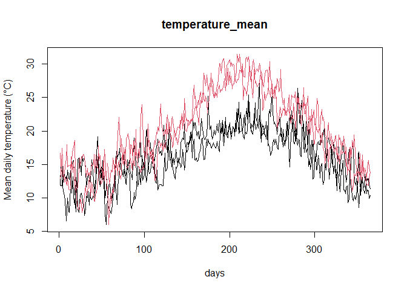

The aemet2fdata package downloads daily meteorological data from the Spanish AEMET OpenData API and converts them into functional data objects (fdata, ldata) of the fda.usc package, with one curve per station and year (365 days).
Installation
# install.packages("remotes")
remotes::install_github("moviedo5/aemet2fdata")API key
Downloading data requires a personal API key, which can be requested at https://opendata.aemet.es/centrodedescargas/altaUsuario. Keep it out of your scripts, e.g. in ~/.Renviron:
library(aemet2fdata)
api_key <- Sys.getenv("AEMET_API_KEY")Main functions
| Function | Result |
|---|---|
aemet2inventory() |
stations: station_id, station_name, province, altitude, lon, lat, wmo_id
|
aemet2df() |
daily data as a data.frame
|
aemet2csv() |
whole daily history of each station (half-year requests): one CSV per station |
aemet2download() |
resumable bulk download (all stations, many years): one file per station and year |
aemet2fdata() |
one variable as fdata (station-year x 365 days) |
aemet2lfdata() |
several variables as ldata (df + one fdata per variable) |
Example without API key
The package includes daily data of two stations (1387 A Coruña and B228 Palma Puerto, 2023-2024):
library(aemet2fdata)
f <- system.file("extdata", "aemet_example.csv", package = "aemet2fdata")
ld <- aemet2lfdata(file = f, vars = c("tmed", "tmax", "tmin", "prec"))
#> Station coordinates (lon, lat) not available: pass 'inventory' (see aemet2inventory()) or 'api_key'.
sapply(ld, NROW)
#> df tmed tmax tmin prec
#> 4 4 4 4 4
ld$df
#> station_id station_name province altitude lon lat wmo_id year
#> 1387_2023 1387 A CORUÑA A CORUÑA 57 NA NA <NA> 2023
#> 1387_2024 1387 A CORUÑA A CORUÑA 57 NA NA <NA> 2024
#> B228_2023 B228 PALMA, PUERTO ILLES BALEARS 3 NA NA <NA> 2023
#> B228_2024 B228 PALMA, PUERTO ILLES BALEARS 3 NA NA <NA> 2024
#> n_days
#> 1387_2023 365
#> 1387_2024 365
#> B228_2023 365
#> B228_2024 365
plot(ld$tmed, col = as.integer(factor(ld$df$station_id)))
Example with the API
inv <- aemet2inventory(api_key = api_key, file = "inventory.rds")
ld <- aemet2lfdata(
station_ids = c("1387", "B228"),
vars = c("tmed", "tmax", "tmin", "prec"),
start_date = "2015-01-01",
end_date = "2024-12-31",
api_key = api_key,
inventory = inv,
output_file = "aemet_ldata.rds"
)
ld$df # one row per station-year, with lon/lat
plot(ld)One station, whole history
Two requests per year and station (1 January-30 June, 1 July-31 December); one CSV per station in UTF-8, so station names with accents or “ñ” are kept. Stations already downloaded are skipped.
log <- aemet2csv("1387", start_date = "1926-01-01", end_date = "2025-12-31",
api_key = api_key, out_dir = "aemet_csv")
ld <- aemet2lfdata(file = "aemet_csv/1387.csv",
vars = c("tmed", "tmin", "tmax", "prec", "sol"),
inventory = "inventory.rds")All stations, 1976-2025
# 1) station metadata (coordinates), once
aemet2inventory(api_key = api_key, file = "inventory.rds")
# 2) all stations with data, one file per station and year
# (aemet_daily/1387/1387_1976.rds, ...); resumable: if it stops, run it again
log <- aemet2download(
start_date = "1976-01-01", end_date = "2025-12-31",
api_key = api_key, out_dir = "aemet_daily",
vars = c("tmed", "tmin", "tmax", "prec", "sol")
)
table(log$status)
# 3) ldata: one curve per station-year
ld <- aemet2lfdata(file = "aemet_daily", inventory = "inventory.rds")
# or only some stations (reads only their files)
ld2 <- aemet2lfdata(file = "aemet_daily", station_ids = c("1387", "B228"),
inventory = "inventory.rds")
ld <- subset(ld, ld$df$n_days >= 360) # complete years only
saveRDS(ld, "aemet_ldata_1976_2025.rds")Notes
- Station identifiers are
station_id(AEMET indicativo, e.g."1387"), notwmo_id. - One curve per station-year; row names
"station_year"(e.g."1387_2023") are shared byldata$dfand everyfdata. - Leap years: February 29 is removed (column 60 is always March 1).
- Missing daily values are kept as
NA. - For large downloads, save the data once (
aemet2df(..., file = "x.csv")) and build the functional objects from the file; AEMET applies rate limits.
Related packages
Other R packages access AEMET OpenData with different goals: climaemet covers many AEMET services (daily, monthly, normals, extremes, forecasts, alerts) with tidy and spatial output and climate graphics, and meteospain gives a common interface to several Spanish meteorological services. aemet2fdata focuses on long daily series stored locally (one file per station, or per station and year) and on their conversion into functional data for fda.usc.
Data source: © AEMET. Data use must cite AEMET as the source (https://www.aemet.es/es/nota_legal).
Citation
citation("aemet2fdata")Author
Manuel Oviedo de la Fuente (manuel.oviedo@udc.es)
Acknowledgments
This work was supported by grants from MICINN and the Xunta de Galicia (ED431C-2020-14, ED431G-2019/01), co-financed by the ERDF.
References
Febrero-Bande, M. and Oviedo de la Fuente, M. (2012). Statistical Computing in Functional Data Analysis: The R Package fda.usc. Journal of Statistical Software, 51(4), 1–28. https://doi.org/10.18637/jss.v051.i04